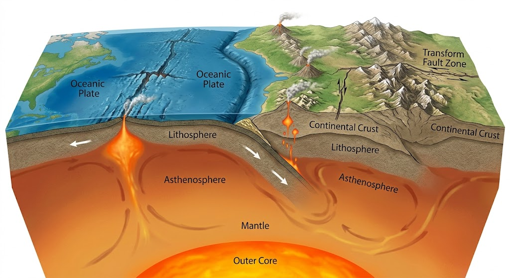

แผ่นธรณีภาคและการเคลื่อนที่
แผ่นธรณีภาคเป็นส่วนของโลกที่มีลักษณะแข็ง ประกอบด้วยเปลือกโลกและเนื้อโลกส่วนบน โดยแบ่งออกเป็นแผ่นขนาดใหญ่และขนาดเล็กหลายแผ่น แผ่นธรณีภาคเหล่านี้สามารถเคลื่อนที่อย่างช้า ๆ บนชั้นเนื้อโลกที่มีสมบัติพลาสติก การเคลื่อนที่ของแผ่นธรณีภาคเป็นผลจากพลังงานความร้อนภายในโลกและกระบวนการถ่ายเทความร้อนภายในเนื้อโลก ซึ่งทำให้เกิดการเปลี่ยนแปลงทางธรณีวิทยาบริเวณขอบแผ่น
การเคลื่อนที่ของแผ่นธรณีภาคแบ่งออกเป็น 3 ลักษณะ ได้แก่ การเคลื่อนที่เข้าหากัน การเคลื่อนที่แยกออกจากกัน และการเคลื่อนที่เลื่อนผ่านกัน เมื่อแผ่นธรณีภาคเคลื่อนที่เข้าหากันอาจทำให้เกิดการมุดตัวของแผ่นหนึ่งลงใต้แผ่นหนึ่ง หรือเกิดการชนกันจนเกิดเทือกเขา หากแผ่นธรณีภาคแยกออกจากกันจะเกิดการสร้างเปลือกโลกใหม่บริเวณสันเขากลางมหาสมุทร ส่วนการเลื่อนผ่านกันอาจทำให้เกิดแผ่นดินไหวจากการสะสมและปลดปล่อยพลังงานตามแนวรอยเลื่อน
การศึกษาแผ่นธรณีภาคมีความสำคัญต่อการอธิบายการเกิดภูเขาไฟ แผ่นดินไหว ร่องลึกมหาสมุทร และการก่อตัวของเทือกเขา นอกจากนี้ยังช่วยให้นักวิทยาศาสตร์เข้าใจการเปลี่ยนแปลงของทวีปและมหาสมุทรในอดีต รวมถึงสามารถนำความรู้ไปใช้ในการประเมินความเสี่ยงจากภัยพิบัติทางธรณีวิทยาและการวางแผนการใช้พื้นที่ได้อย่างเหมาะสม